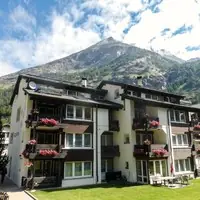
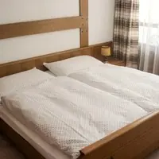
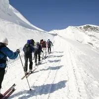

Chalet Rustica
Chalet Rustica
Ein eigenes Instagram hat das Chalet noch nicht. Hier ist eine Idee, wie die ersten 60 Beiträge aussehen könnten: das Haus am Bach, die drei Wohnungen, das Tal im Sommer und im Winter, Heidi und ihre Praxis, dazwischen die Sätze Ihrer Seite.
Tippen Sie auf einen Beitrag, dann sehen Sie ihn gross mit seinem Text. Der Name oben ist der Name Ihres Hauses; ein Konto legen Sie an, wann und wie Sie möchten.

Haus
Wohnungen
Winter